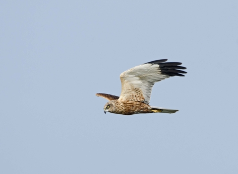
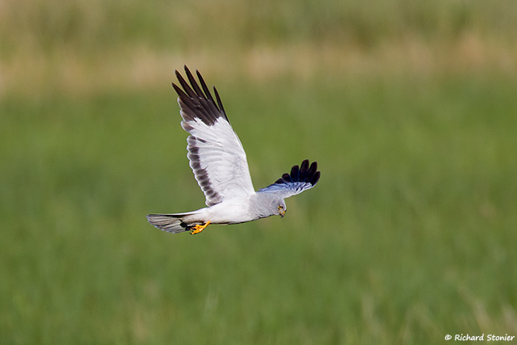
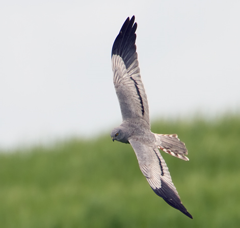

stuff
| Wingspan | Lifespan | Weight | Number of Breeding Pairs |
|---|---|---|---|
| 115-130cm | 6 years | 400-800 grams | 448 |
The marsh harrier is not very common, but they are found around certain mashes in good numbers. RSPB Rainham marshes is brobably the best place to see them.

BLIH BLAH BLAH
| Wingspan | Lifespan | Weight | Number of breeding Pairs |
|---|---|---|---|
| 97-122cm | 7 years | 400-600 grams | 691 |
Hen harriers hunt red grouse, so they need moorland or upper heathland. Those habitats in The Cairngorms National Park is great as most of the Uk population lives there.

BLIH BLAH BLAH
| Wingspan | Lifespan | Weight | Number of breeding pairs |
|---|---|---|---|
| 97-120cm | 13-16 years | 225-450 grams | Less than 5 |
The Montagu's Harrier is arguably the rarest breeding bird in the uk so reserves are hard to guarantee. This is because their breeding sites are kept hidden, and apart from those areas, they are extremely difficult to find in the uk.